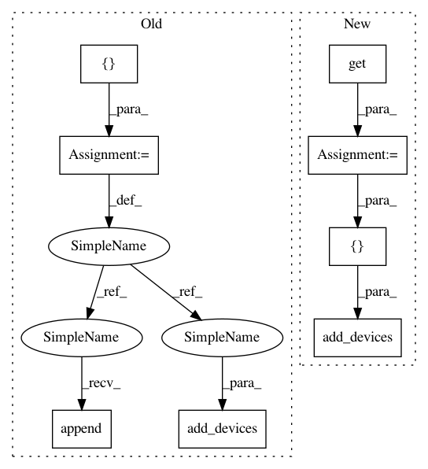

cd67368bb75f8b174b17649c3df37bb75a75bc3b,homeassistant/components/sensor/gtfs.py,,setup_platform,#Any#Any#Any#Any#,134
Before Change
pygtfs.append_feed(gtfs, os.path.join(gtfs_dir,
config["data"]))
dev = []
dev.append(GTFSDepartureSensor(gtfs, config["origin"],
config["destination"]))
add_devices(dev)
// pylint: disable=too-many-instance-attributes,too-few-public-methods
After Change
gtfs_dir = hass.config.path(DEFAULT_PATH)
data = config.get(CONF_DATA)
origin = config.get(CONF_ORIGIN)
destination = config.get(CONF_DESTINATION)
name = config.get(CONF_NAME)
if not os.path.exists(gtfs_dir):
os.makedirs(gtfs_dir)
if not os.path.exists(os.path.join(gtfs_dir, data)):
_LOGGER.error("The given GTFS data file/folder was not found!")
return False
import pygtfs
split_file_name = os.path.splitext(data)
sqlite_file = "{}.sqlite".format(split_file_name[0])
joined_path = os.path.join(gtfs_dir, sqlite_file)
gtfs = pygtfs.Schedule(joined_path)
// pylint: disable=no-member
if len(gtfs.feeds) < 1:
pygtfs.append_feed(gtfs, os.path.join(gtfs_dir, data))
add_devices([GTFSDepartureSensor(gtfs, name, origin, destination)])
// pylint: disable=too-many-instance-attributes,too-few-public-methods
class GTFSDepartureSensor(Entity):
In pattern: SUPERPATTERN
Frequency: 3
Non-data size: 8
Instances
Project Name: home-assistant/home-assistant
Commit Name: cd67368bb75f8b174b17649c3df37bb75a75bc3b
Time: 2016-09-04
Author: mail@fabian-affolter.ch
File Name: homeassistant/components/sensor/gtfs.py
Class Name:
Method Name: setup_platform
Project Name: home-assistant/home-assistant
Commit Name: 0abc50e84458c9ed490c61a74dcce9c4085ae7f1
Time: 2016-08-19
Author: mail@fabian-affolter.ch
File Name: homeassistant/components/sensor/swiss_public_transport.py
Class Name:
Method Name: setup_platform
Project Name: home-assistant/home-assistant
Commit Name: cce3e284d735ad2b4c71c4100bf7ce924cbf0c7f
Time: 2016-09-11
Author: mail@fabian-affolter.ch
File Name: homeassistant/components/sensor/neurio_energy.py
Class Name:
Method Name: setup_platform